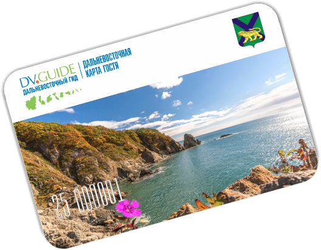

О проекте
Центр развития туризма «ДАЛЬНЕВОСТОЧНЫЙ ГИД» – это инновационная межрегиональная туристская площадка, travel-интерфейс между бизнесом, властью и потребителями по вопросам развития туристской и смежных отраслей на Дальнем Востоке. Центр объединяет усилия для выработки наиболее эффективных решений, которые позволят повысить инвестиционную привлекательность, увеличить турпоток и долю рынка внутреннего и въездного туризма во всех 9 Субъектах Дальневосточного ФО Российской Федерации. ООО «Центр развития туризма «ДАЛЬНЕВОСТОЧНЫЙ ГИД» – это команда профессионалов и единомышленников, работающая в индустрии туризма и гостеприимства со стажем более 27 лет, посетившая почти весь Мир, побывавшая на всех континентах, покорившая самые высокие горные вершины и полюса планеты Земля.
Приветственные слова
Тут размещаем приветственное слово губернатора Приморского края Тарасенко Андрея Владимировича
“Тарасенко Андрей Владимирович
Губернатор Приморского края
Тут размещаем приветственное слово губернатора Приморского края Тихоцкий-Рикорд Андрея Владимировича
“Тихоцкий-Рикорд Андрей Владимирович
Губернатор Приморского края
Тут размещаем приветственное слово губернатора Приморского края Сушков Андрея Владимировича
“Сушков Андрей Владимирович
Губернатор Приморского края
Тут размещаем приветственное слово губернатора Приморского края Чуков Андрея Владимировича
“Чуков Андрей Владимирович
Губернатор Приморского края
Партнеры
Центр развития туризма «ДАЛЬНЕВОСТОЧНЫЙ ГИД» приглашает лидеров сферы туризма, гостеприимства, развлечений, а также смежных сфер деятельности Дальневосточного ФО для плодотворного сотрудничества и партнерства, обсудить тенденции и пути развития отрасли, применить опыт и инновации, а также воспользоваться уже созданными эффективными отраслевыми инструментами.
Ассоциация коренных малочисленных народов Севера Приморского края
Количество партнеров проекта
3Что значит быть партнером проекта?
В пилотном проекте «ДАЛЬНЕВОСТОЧНЫЙ ГИД. Приморский край» принимают участие представители различных сегментов туристического рынка: туроператоры, отели, рестораны, музеи, авиакомпании, санатории, пансионаты, базы и дома отдыха, Национальные парки и Заповедники, службы бронирования авто, кино и театры, ночные клубы и казино и многие другие.
Служба поддержки
гостей и жителей Дальнего Востока
Дальневосточная карта
Пластиковая карта, география действия — 9 регионов ДВ, срок действия — 2 года
Дальневосточная карта гостя и жителя DV GUIDE CARD — первая в России Межрегиональная туристская программа лояльности, разработанная для туристов и самостоятельных путешественников по Дальнему Востоку, а также для жителей Дальнего Востока.
Подробнее о Карте Карта позволит гостям и жителям Дальнего Востока получать скидки и преференции на посещение объектов жизненной необходимости, туристского, культурного и природного наследия на территории всех 9 Субъектов Российской Федерации: Амурская область, Еврейский АО, Хабаровский край, Приморский край, Магаданская область, Сахалинская область, Камчатский край, Чукотский АО, Республика Якутия (Саха).
В список участников пула Дальневосточной карты гостя и жителя DV GUIDE CARD вошли: туроператоры и музеи, кинотеатры и театры, транспортные компании и такси, отели и гостиницы, санатории и пансионаты, базы и дома отдыха, кафе и рестораны, развлекательные центры, магазины сувенирной продукции, фермерские хозяйства и мастера народных промыслов, магазины туристского снаряжения и одежды, рыболовно-охотничьи магазины, рыболовные и охотничьи хозяйства, а также другие организации, предоставляющие сопутствующие услуги.
Кроме того, карта позволяет найти из различных маршрутов и туров наиболее удобный по своей географии, краткосрочности, тематическому предпочтению и цене со скидками и преференциями от ведущих туроператоров по Дальнему Востоку.
Дальневосточная карта имеет несколько сервисных приложений
Информационное
Круглосуточная служба поддержки
Безопасное
Служба 112, единый контактный центр МЧС
Топливное
Скидки на АЗС
Страховое
Скидки на страховые услуги
Дисконтное
Скидки и преференции для всех сфер деятельности
Платежное
В ближайшей перспективе ко-брендинг с банками
Медиа
Путеводитель
Здесь будет текст
Журнал
Здесь будет текст
Радио
Здесь будет текст
ТВ
Здесь будет текст
Игра
Здесь будет текст
Звуки природы
Здесь будет текст
Я путешествую по Дальнему Востоку
Международный туристский медиаконкурс
Члены жюри
Федор Конюхов
Советский и российский путешественник, писатель, художник, обладатель национальной премии «Хрустальный компас»
Владимир Чуков
Выдающийся полярный путешественник, президент экспедиционного центра «Арктика» РГО, почётный полярник, заслуженный мастер спорта СССР
Виталий Сундаков
Первый профессиональный путешественник. Президент Фонда Русских экспедиций. Президент Транснациональной Школы выживания
Николай Литау
Русский путешественник, прославленный яхтсмен, кавалер Ордена Мужества, награжден престижными наградами мирового яхтинга
о конкурсе Фото: А.И.Тихоцкий-Рикорд у горы Рикорда на Камчатке
Медаль имени П.И. Рикорда
Медаль присваивается за выдающийся вклад в развитие Дальнего Востока: видным общественным деятелям, госслужащим, ученым, педагогам, предпринимателям, мастерам народных промыслов, путешественникам.
Положение О П.И. Рикорде
Географические объекты Дальнего Востока, которые носят имя Адмирала П.И. Рикорда
- Мыс Рикорда — южная оконечность острова Итуруп (Курильские острова),
- Пролив Рикорда (между Курильскими островами Кетой и Ушишир),
- Подводный вулкан Рикорда в проливе Рикорда (Курильские острова),
- Река Рикорда на острове Кунашир (Курильские острова),
- Гора Рикорда (Камчатка),
- Остров Рикорда в заливе Петра Великого в Японском море (Приморский край).
Сделано на Дальнем Востоке
Межрегиональный межотраслевой Знак Качества
Цели: популяризация и повышения престижа Дальневосточной продукции и услуг, всемерная поддержка Дальневосточных товаропроизводителей, фермерских хозяйств и мастеров народных промыслов (в т.ч. коренного населения Дальнего Востока), содействие в продвижении и популяризации Дальневосточной продукции, разработка стандартов качества для различных сфер деятельности.
Обладатели Знака Качества
Положение